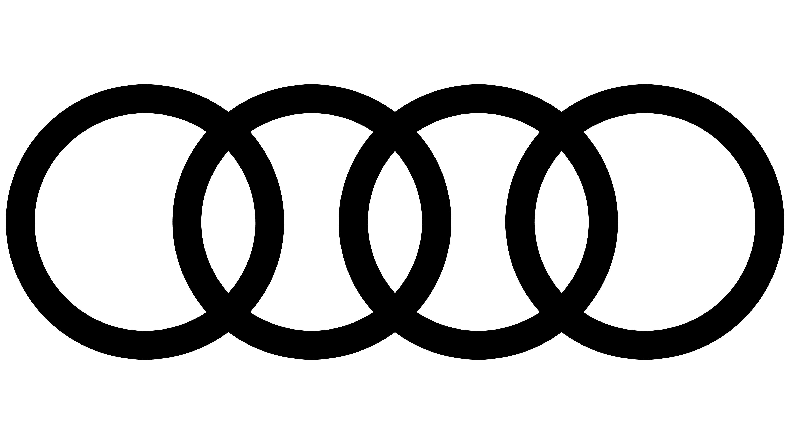
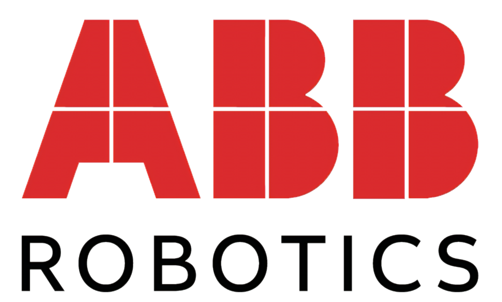
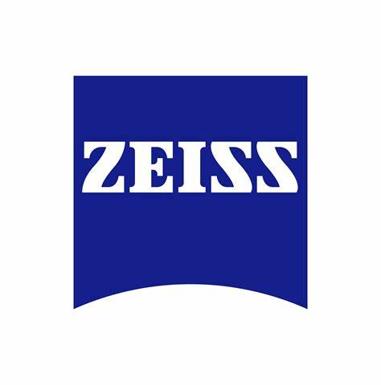
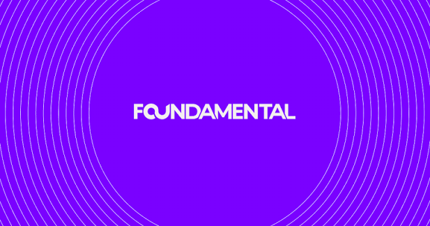
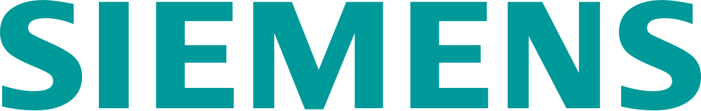

European
automotive Tier 1Active · Technology Strategy
Global · 2026 · Board-level strategy paper
Automotive MicroLED strategy paper
A board-level analysis of the automotive MicroLED ecosystem for a European automotive Tier 1, delivered under our Mosaic Venture Lab banner. The client is under NDA. Compound-semiconductor value-chain mapping from GaN epitaxy through mass transfer to driver ASICs and backplanes; a 34-company partner-suitability scorecard; entry-point analysis across exterior lighting, panoramic HUD and hidden interior surfaces; and a risk-adjusted 24-month roadmap for R&D and CAPEX. Twenty-one figures, each badged with its provenance. Full case study below →

Deep-Tech ScoutingTaiwan · Europe · US · Asia · 2019
4D printing — from research field to four funded options
Mapped a technology with 90 patents worldwide against 3D printing's 4,000 a year, built a technical team at Taiwan's High Speed 3D Printing Research Center, mapped eleven principal investigators across three continents, and turned it into four costed concepts on a three-gate investment path. Full case study below →
Scouting · Roadshow
Japan · Korea · China · Israel · USA · Taiwan
Six-market scouting & the Brain-Wave project
Ran multi-country technology scouting for Audi across Asia, Israel, and the US — including the Brain-Wave Scouting project to identify disruptive wireless brain-wave sensing technologies for the vehicle, from technology discovery through biometric business-model creation and integration support. Organized and led the executive roadshows connecting Audi leadership to the sources.
Volkswagen
Group InnovationScouting
Taiwan
Startup scouting in Taiwan
Contracted by Volkswagen Group Innovation to identify and evaluate promising startups across Taiwan's technology ecosystem — mapping the landscape and surfacing the most relevant innovators for the group.
Roadshow · Demo Day
USA
Demo day at NASA & Lockheed Martin
Hosted a full demo day at NASA for Audi senior management — taking leadership to NASA and Lockheed Martin to explore frontier aerospace and defense technologies for the vehicle.

AI & Robotics ScoutingJapan · 2017–2018
AI and machine-vision scouting for the YuMi robot
Swept Japan's AI and robotics ecosystem for ABB Robotics — edge inference silicon, reinforcement learning for motion, high-speed computer vision and 3D sensing — and wrote a 27-field technical dossier on each of the fifteen companies that survived the screen. ABB's own engineers graded them. Full case study below →
Thailand
High-temperature kiln-tunnel sensors
Scouted high-sensitivity, high-temperature sensor technologies for Siam Cement Group's kiln tunnels — sourcing sensors able to survive extreme-heat industrial environments.
Thailand · 2017
Biometric technology scouting
Scouted the global biometrics landscape for Chanwanich, a Thai IT-solutions group — benchmarking 15 facial-recognition and fingerprint-matching suppliers and mapping the trends (mobile, contactless, wearables, airport & IoT biometrics) behind a home-grown biometric platform.
 Scouting
ScoutingUSA · Utilities
Sensor scouting for a US energy utility
Ran a technology-scouting engagement for NiSource, the US energy utility, identifying and evaluating sensor technologies for its infrastructure and operations.
Scouting · Roadshow
China · Israel
Radar & lidar technology scouting
Scouted radar and lidar sensing technologies for Lite-On across China and Israel, and conducted the executive roadshows introducing Lite-On leadership to the most promising suppliers.
China · 2015
China technology scouting
Ran a technology scouting engagement for Coca-Cola in China — identifying and evaluating innovation partners in one of the world's fastest-moving markets.

Strategy & Market ReadinessJena, Germany · 2024
ZEISS Microoptics — strategy and automotive readiness
Two facilitated workshops at the Jena site, run and reported in German: an innovation and product-strategy session that rebuilt the SWOT with the leadership team, then a production-readiness session preparing the team for a Korean Tier-1 programme. Full case study below →
Trans Pacific
Technology FundVenture Partner
USD 100M · Cross-Pacific
Venture partner to a $100M fund
Served as venture partner to the Trans Pacific Technology Fund (USD 100M) — sourcing, evaluating, and supporting deep-tech investments across the Pacific.

Venture PartnerHeidelbergCement · 2018–2020
Corporate VC deal sourcing
Venture partner to Foundamental, HeidelbergCement's venture-capital fund, from 2018 to 2020 — sourcing and assessing construction- and materials-tech investment opportunities.
Global · 2012–2018
Co-built the APEC O2O accelerator
Conceived and co-built the APEC O2O accelerator together with Taiwan's government — a startup program that ran around the world for six years, from the SME Business Forum in Nanjing to the O2O Summit in Lima, Peru. Built on relationships Yushan has forged with governments across 10+ APEC economies.
 ×AcBelStrategic Partnership
×AcBelStrategic PartnershipIndia · Taiwan
Cross-border strategic license agreement
Structured and helped establish a strategic technology-license agreement between Uno Minda — a leading India auto components & systems maker — and AcBel Polytech (康舒科技) of Taiwan.

Corporate InnovationChina
Internal innovation program
Designed and ran an internal corporate-innovation program for Siemens China — building the methods and momentum to engage startups and emerging technologies from inside the organization.
Malaysia · 2016
Southeast Asia technology scouting
Executed technology-scouting projects with IBM in Malaysia, extending Yushan's scouting reach across Southeast Asia's innovation ecosystems.